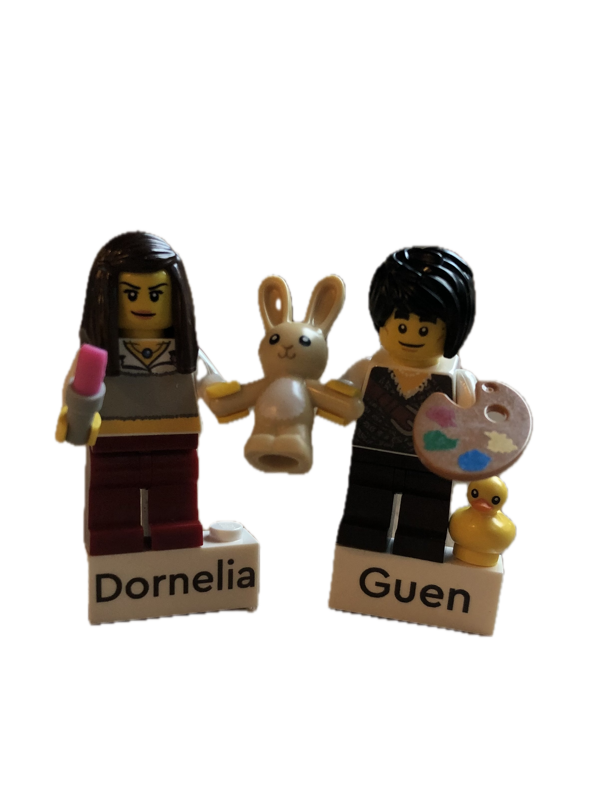

Oder sollte ich eher sagen, Ich hab den Jackpot geknackt ???
Sei es dein schönes Lächeln, deine leutenden Augen, dein gewitzter Humor (JA DU BIST LUSTIG!), dein uniquer Kleidungsstil (Gorgous-core) oder einfach nur das Gefühl welches du in mir auslöst wenn du in meiner Nähe bist,
ich bin ein echter Glückspilz.